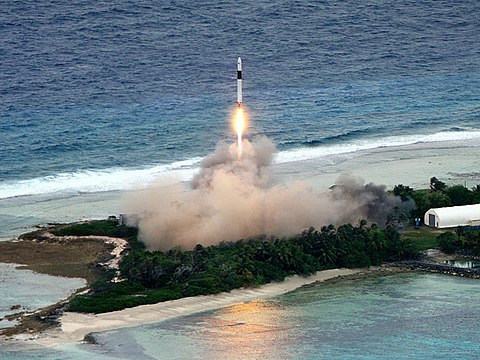
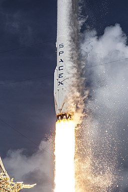
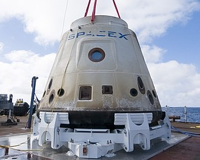

SpaceX (англ. Space Exploration Technologies Corporation (SpaceX)) — американське аерокосмічне приватне
підприємство, що займається будівництвом космічного транспорту, наданням космічних транспортних та
комунікаційних послуг. SpaceX є виробником ряду ракет-носіїв, зокрема, сімейства Falcon та двигунів для них, а
також космічних кораблів Dragon (у вантажному та пілотованому варіантах). Крім цього компанія розвиває мережу
супутників Starlink, за допомогою яких надає послуги швидкого широкосмугового доступу до Всесвітньої мережі.
Офіс розташовано в Готорні в Каліфорнії. Компанію створено Ілоном Маском в 2002 році з метою здешевлення
виведення вантажів та людей на орбіту та колонізації Марсу в майбутньому.
Серед основних досягнень SpaceX: перша приватна ракета на рідкому паливі, що вийшла на орбіту Землі (Falcon 1,
2008), першість серед приватних компаній в доставлені на орбіту та приземлені космічного корабля (Dragon в
2010), першість серед приватних компаній, що відправили корабель до Міжнародній космічній станції (Dragon,
2012), першість в вертикальному зльоті і посадці орбітальної ракети-носія (Falcon 9 в 2015), першість в
кількаразовому використанні орбітальної ракети-носія (Falcon 9 в 2017), перша доставка астронавтів до МКС
приватною компанією (SpaceX Crew Dragon Demo-2, 2020). SpaceX запустила та використала для повторного запуску
Falcon 9 вже понад сотню разів.
Наразі SpaceX займається розробкою надважкої ракети Зореліт, у якої багаторазовим буде не лише нижній ступінь, а
і верхній. У вересні 2018 року SpaceX представила першого пасажира для Starship, що полетить з туристичною
місією навколо Місяця — DearMoon. Ним став японський мільярдер Юсаку Маедзава, політ повинен відбутися у 2023
році.
Підрозділ SpaceX «Starlink» займається виготовленням і запуском супутників зв'язку,
що утворюють єдину
мережу. Ця мережа робить високошвидкісний інтернет доступним навіть у віддалених від наземних комунікацій
місцях. Станом на травень 2022 року SpaceX вже вивели на низьку навколоземну орбіту понад 2400 супутників
«Starlink». Таким чином, це вже найбільше сузір'я супутників в історії. За планами компанії його розмір має
вирости до кільканадцяти тисяч у найближчі роки[6].
SpaceX розробила свою першу орбітальну ракету-носій Falcon 1 за приватні кошти. Falcon 1 був одноразовою двоступеневою ракетою-носієм легкого класу. Загальна вартість розробки Falcon 1 становила приблизно від 90 до 100 мільйонів доларів США
SpaceX вперше здійснила успішну посадку та відновила першу ступінь ракети-носія у грудні 2015 року під час запуску Falcon 9 Flight 20
Перший робочий космічний корабель Dragon у вантажному варіанті запущений у грудні 2010 року на борту COTS Demo Flight 1, другого польоту Falcon 9, і успішно повернувся на Землю після двох обертів, виконавши всі цілі своєї місії
